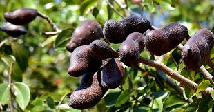
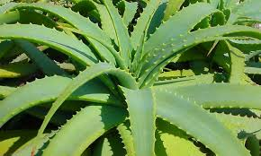
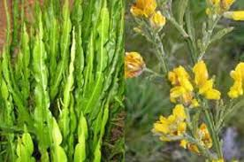
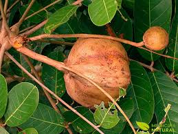
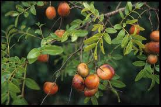
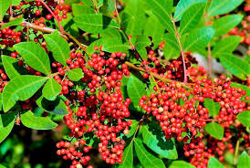
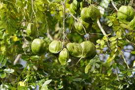
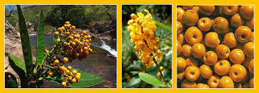
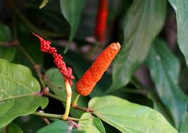
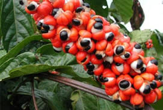

Plantas Medicinais Indígenas

As plantas medicinais são parte fundamental da medicina indígena. Conhecimentos passados de geração em geração revelam os poderes curativos da natureza. Algumas das mais conhecidas incluem:

Jatobá
Fortalece o corpo e combate o cansaço.

Babosa
Tratamento de queimaduras e cicatrizações.

Carqueja
Auxilia na digestão e no fígado.

Cipó Mil-Homens
Utilizado contra reumatismo e dores.

Unha-de-Gato
Potente anti-inflamatório natural.

Uxi Amarelo
Indicado para miomas, inflamações no útero e ovário, e infecções urinárias.

Andiroba
Usada para dores articulares e inflamações, picadas de inseto e feridas na pele.

Copaíba
Usada para problemas respiratórios e inflamações, antimicrobiana, cicatrizante e protetora do trato urinário.

Aroeira
Usado no combate infecções, feridas, dores de garganta e inflamações ginecológicas.

Breu Branco
Usado para problemas respiratórios, como bronquite e asma, anti-inflamatório, purificação do ambiente e espiritualidade.

Cumaru
Usado para melhorar problemas respiratórios, atua como relaxante e aromatizante natural.

Murici
Usada para o combate diarreias, inflamações intestinais e febres.

Pau d' Arco/Ipê Roxo
Usado no combate infecções, fortalece o sistema imunológico, usado em tratamentos de câncer.

Jaborandi
Usado estimula a produção de saliva e suor, usado em tratamentos oftalmológicos.

Guaraná
Usado no estimulante natural, combate o cansaço, dores de cabeça e melhora a disposição.